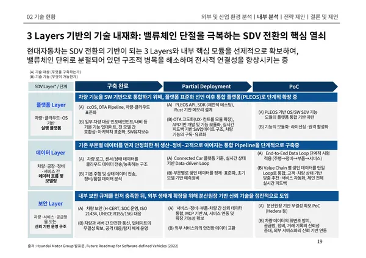
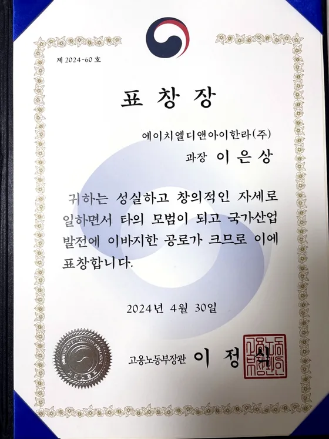

AwardsMinister of Education Award, commendation from the Minister of Employment and Labor
Grand Prize, Korea MBA Case Analysis Competition (Minister of Education Award)
I entered the 2025 Korea MBA Case Analysis Competition with KAIST MBA classmates. Of the topics Hyundai Motor set, we chose "securing efficiency in corporate strategy through digital innovation". After the preliminary round, we won the Grand Prize, the Minister of Education Award, among the nine teams in the final from Korean MBA programs including Seoul National University, Yonsei, and Korea University.
Our report, "Hyundai Motor Next Transformation: an SDV innovation framework connecting data, organization, and operations", presented a strategy for turning Hyundai's existing foundation into a faster transition as the industry's value moves from hardware to software-defined vehicles (SDV). We treated digital transformation as an organizational problem, not a matter of adopting technology, and proposed rebuilding who decides, what counts as performance, and which talent stays, around SDV.
- Organization structure for centralized decision-making: unify SDV-related teams into one organization accountable end to end from design to production and operation, and use a matrix of domains (OTA, ADAS, cloud) and functions (design, development, production) so problems are solved by structure rather than individual effort.
- KPIs and incentives for SDV performance: treating the cause of slow transition as disconnection between organizations rather than lack of resources, we proposed three evaluation measures: data sharing, collaboration contribution, and user experience.
- Rebuilding talent competitiveness for SDV execution: employer branding as a tech company, making developers' contributions visible assets, and a technology experiment program with no penalty in evaluation for failure.




Selected pages from team 404 Found's preliminary and final reports (in Korean).
Commendation from the Minister of Employment and Labor
Awarded for raising productivity in HR by improving recruiting, training, payroll, and culture programs and by replacing paper forms and old systems with new ones in each area I handled.
| Review criterion | Main contributions |
|---|---|
| Productivity through better ways of working | Took part in developing the group's integrated training system, developed the HRM HR and payroll system, moved onboarding and offboarding paperwork online and systematized recruiting, switched all hiring interviews to video, and planned company-wide rotating remote work |
| Satisfaction through better quality and service | Launched localization training for employees posted abroad, introduced the government youth savings program for new hires for the first time at the company (all 14 applicants enrolled), created an award program for contract employees, received an internal division award |
| Cooperative labor-management culture | Designed and simulated changes to the pay and bonus structure in wage and collective bargaining for the 52-hour workweek, contributing to the wage agreement. On the group HR and culture reform task force: a flat title system for all employees, priority leave for managers, and a gift kit for working mothers |
